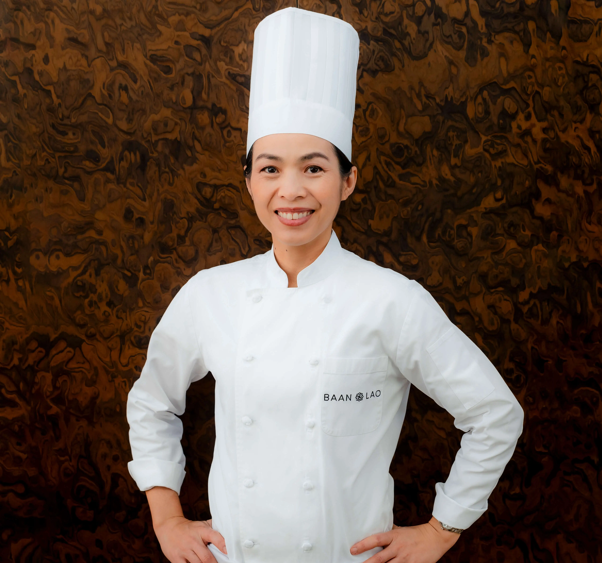
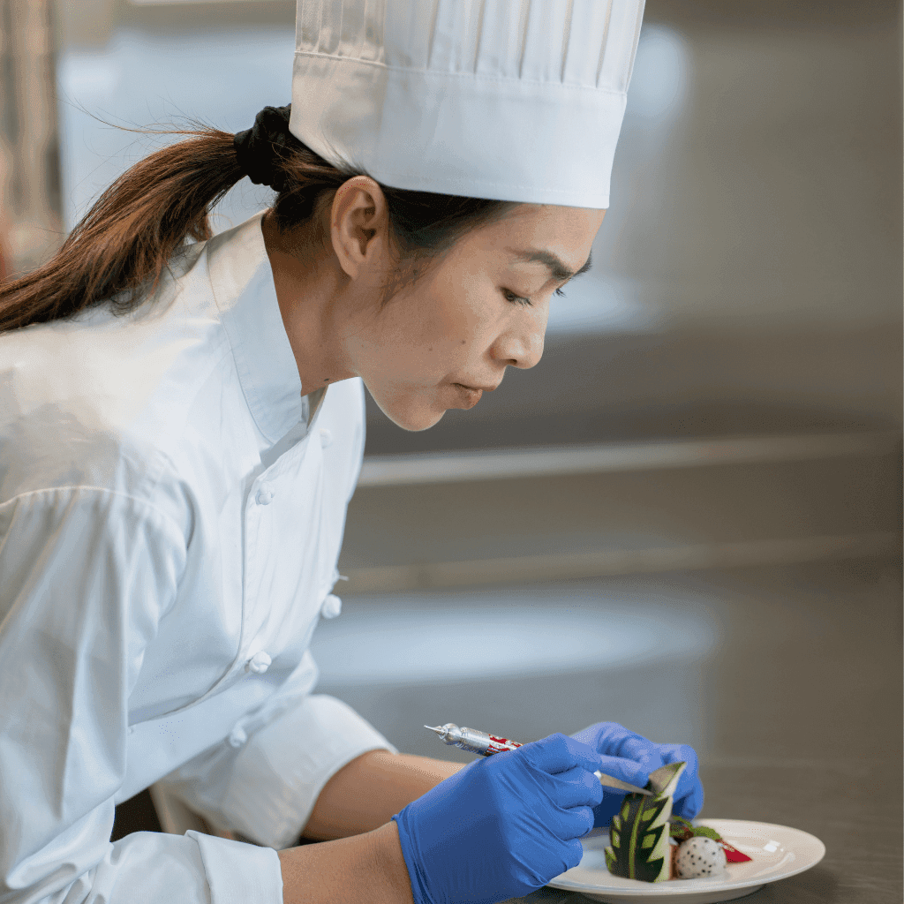
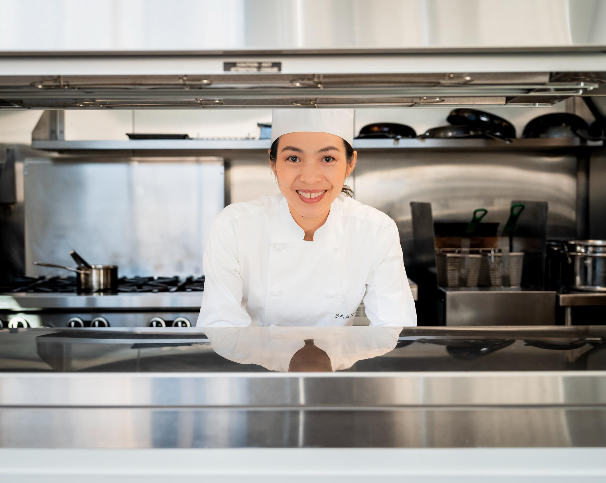
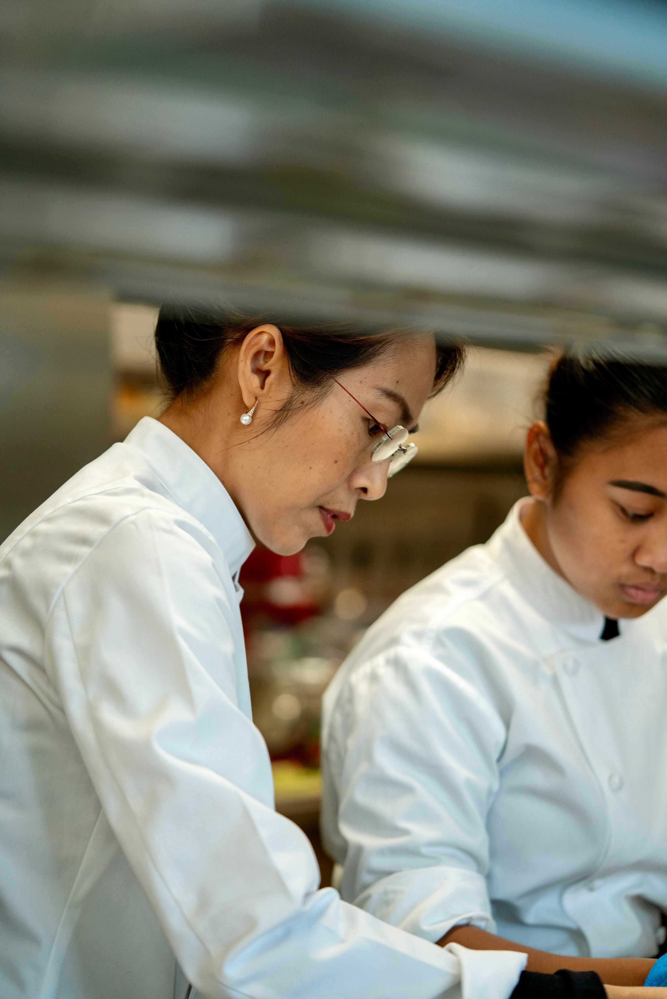
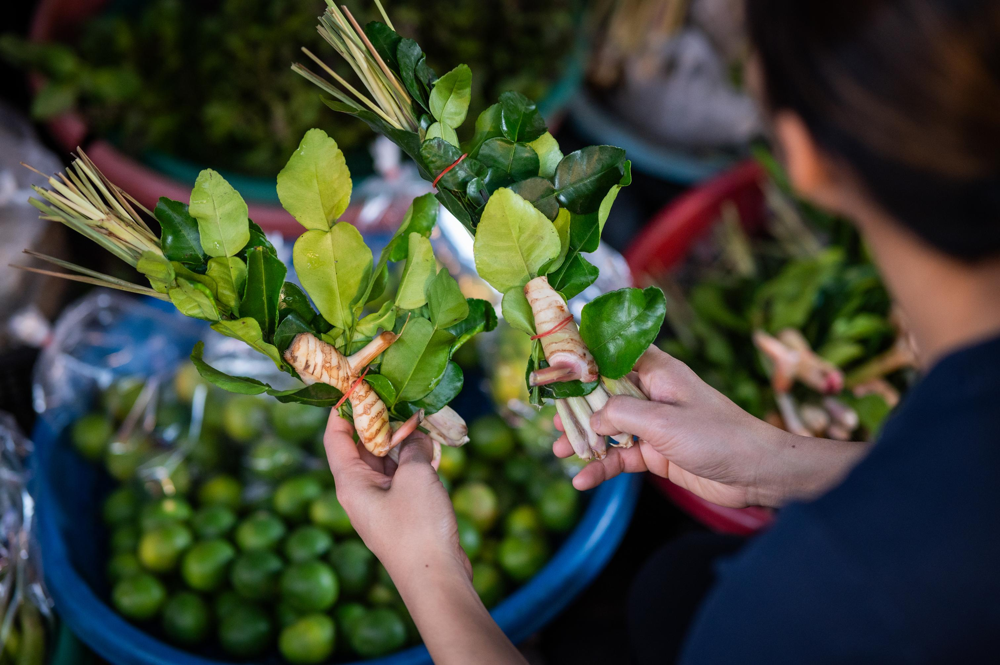
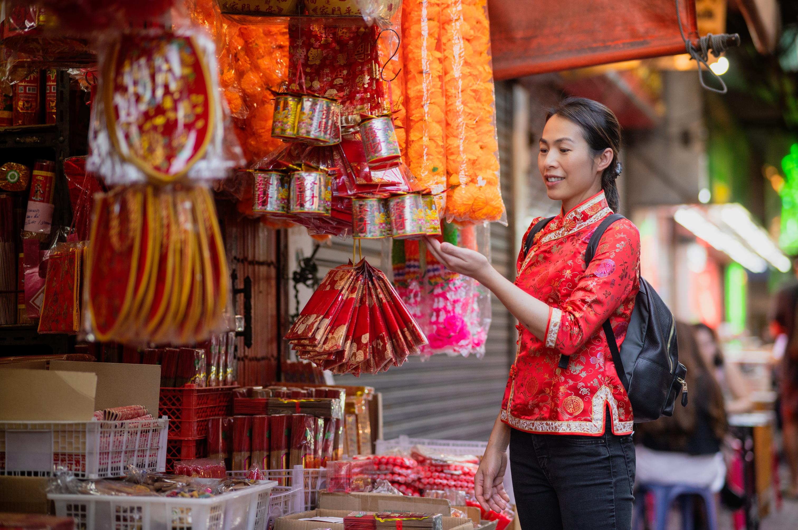
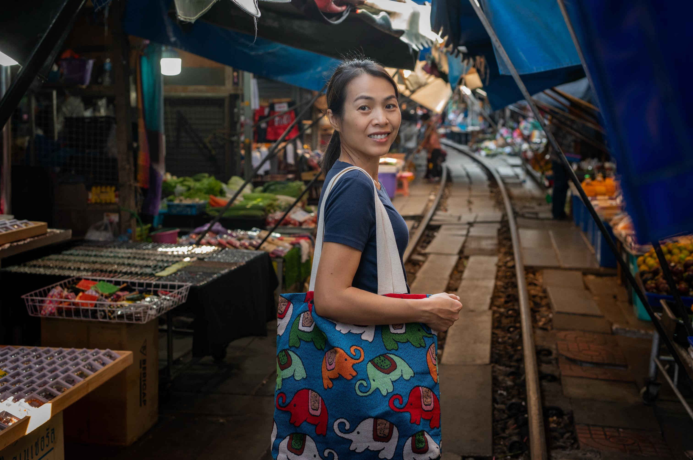
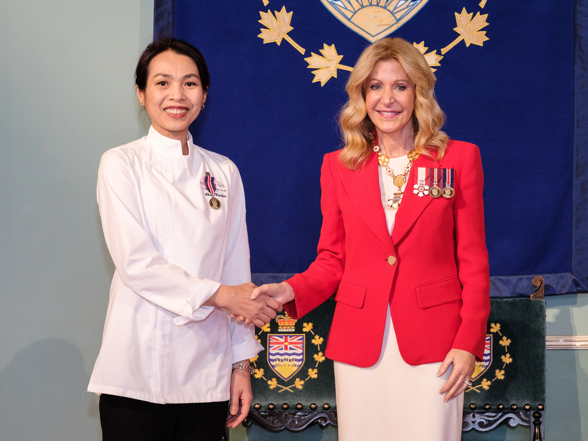
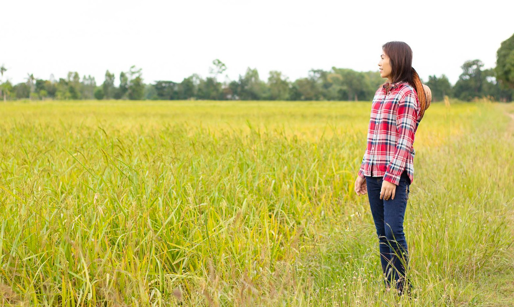

Chef Nutcha
Nutcha Phanthoupheng, Proprietor & Executive Chef


Born in the countryside region of Isaan in Thailand, Nutcha was raised living the authentic ‘farm to table’ experience, using only local, fresh, organic ingredients at home.
She has been privately trained by Michelin star chefs in Thailand, received her Thai Cuisine diploma from The Blue Elephant in Bangkok, certification from the Mandarin Oriental Hotel Bangkok Cooking School, and her food carving certificate from Bussaracum Royal Thai Cuisine.
Her commitment to fresh farm and field-to-table ingredients, life-long immersion in traditional Thai cuisine, and exceptional training with some of the best Thai chefs in the world guarantee each guest a mouth-watering meal that will please your eyes, nose and palate.
Learn More




Chef Nutcha Phanthoupheng has long been celebrated for elevating Royal Thai cuisine in Canada, but now she’s receiving a truly regal honour—the King Charles III Coronation Medal. Chef Nutcha has redefined fine dining with her dedication to authenticity, sustainability, and culinary excellence.
Learn More about the King Charles III Coronation Medal
